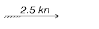

| 151. Какво представлява Racon: |
|
радиомаяк пасивен радиолокационен отражател активен радиолокационен отражател навигационна система на военноморските сили на САЩ |
| 152. Ветроходът плава на: |
|
ляв бейдевинд ляв халфвинд фордевинд десен галс |
| 153. Ветроходът плава на: |
|
ляв галс десен халфвинд десен бейдевинд бакщаг |
| 154. Международните правила за предпазване корабите от сблъскване са задължителни за: |
|
всички кораби всички кораби с изключение на военни кораби за всички морски райони с изключение на крайбрежните райони за големите кораби |
| 155. Знакът нанесен на морска карта означава: |
|
сух док шлюзова преграда буна мол |
| 156. Знакът нанесен на морска карта означава:  |
|
посока и скорост на движение на кораба посока и скорост на вятъра във възли дълбочина над известен подводен обект посока и скорост на приливно течение, както са обозначени |
| 157. Знакът нанесен на морска карта означава: |
|
дълбочина над неизвестен подводен обект посочената дълбочина не е потвърдена дълбочина над известен подводен обект приблизителна дълбочина |
| 158. Знакът нанесен на морска карта означава: |
|
водорасли посока на движение на променливо течение зоопланктон обичаен път на движение на рибни пасажи |
| 159. Знакът нанесен на морска карта означава: |
|
скални острови забранен за плаване район скали, показващи се над повърхността на водата на указаната височина подводни скали с показана дълбочина над тях |
| 160. Знакът нанесен на морска карта означава: |
|
място на разполагане на кораб - мишена потънал под водата кораб кораб мишена потънал кораб, чийто корпус се вижда над водата |